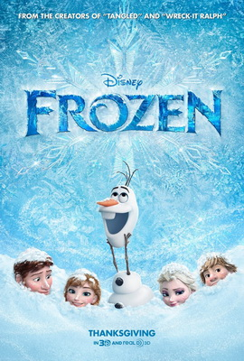

The 20-1 Animation Film Festival
Film Categories
Romance
5 Centimeters Per Second

5 Centimeters Per Second (Japanese: 秒速5センチメートル Hepburn: Byōsoku 5 Senchimētoru?) is a 2007 Japanese animated feature film by Makoto Shinkai. The film was finished on 22 January 2007. The first part of the film was released on Yahoo! Japan as streaming video to Yahoo! Premium members from 16 to 19 February 2007. On 3 March 2007, the full length featured film had its theatrical premiere at Cinema Rise in Shibuya, Tokyo. The film consists of three segments: Cherry Blossom (桜花抄 Ōkashō?), Cosmonaut (コスモナウト Kosumonauto?), and 5 Centimeters per Second (秒速5センチメートル Byōsoku 5 Senchimētoru?), totaling about an hour of runtime. As in Shinkai's previous works, Tenmon composes for this film's soundtrack. The DVD was released on 19 July 2007. A novel of 5 Centimeters Per Second has also been released, expanding on the film. In the July 2010 issue of Afternoon, a manga adaptation started serialization, illustrated by Seike Yukiko. It was awarded for Best Animated Feature Film at the 2007 Asia Pacific Screen Awards.
Director: Makoto Shinkai
Frozen

Frozen is a 2013 American 3D computer-animated musical fantasy film produced by Walt Disney Animation Studios and released by Walt Disney Pictures.[4] It is the 53rd animated feature in the Walt Disney Animated Classics series. Inspired by Hans Christian Andersen's fairy tale The Snow Queen,[5] the film tells the story of a fearless princess who sets off on an epic journey alongside a rugged iceman, his loyal pet reindeer, and a naïve snowman to find her estranged sister, whose icy powers have inadvertently trapped the kingdom in eternal winter.
Frozen underwent several story treatments for years before being commissioned in 2011, with a screenplay written by Jennifer Lee, and both Chris Buck and Lee serving as directors. It features the voices of Kristen Bell, Idina Menzel, Jonathan Groff, Josh Gad and Santino Fontana. Christophe Beck, who had worked on Disney's award-winning short Paperman, was hired to compose the film's orchestral score, while husband-and-wife songwriting team Robert Lopez and Kristen Anderson-Lopez wrote the songs.
Director: Chris Buck & Jennifer Lee
The Girl Who Leapt Through Time
The Girl Who Leapt Through Time (時をかける少女 Toki o Kakeru Shōjo?) is a 2006 Japanese-animated science fiction romance film produced by Madhouse, directed by Mamoru Hosoda and written by Satoko Okudera. Released by Kadokawa Herald Pictures, the film is a loose sequel to the 1967 novel of the same name by Yasutaka Tsutsui and shares the basic premise of a young girl who gains the power of time travel, but with a different story and characters than the novel. Riisa Naka voices teenager Makoto Konno, who learns from Kazuko Yoshiyama, Makoto's aunt and the protagonist to the original story, that Makoto has the power to travel through time. Makoto begins using the time-leaps frivolously to fix problems.
The Girl Who Leapt Through Time was released on July 15, 2006 and received positive reviews. The film won numerous awards, including the Japan Academy Prize for Animation of the Year. The English version was licensed and produced by Kadokawa Pictures U.S., with dubbing supplied by Ocean Productions, and released by Bandai Entertainment in 2008.
Director: Mamoru Hosoda
WALL-E

WALL-E (stylized with an interpunct as WALL·E) is a 2008 American computer-animated science-fiction, post-apocalyptic, comedy film produced by Pixar and released by Walt Disney Pictures. Directed by Andrew Stanton, the story follows a robot named WALL-E, who is designed to clean up an abandoned, waste-covered Earth far in the future. He falls in love with another robot named EVE, who also has a programmed task, and follows her into outer space on an adventure that changes the destiny of both his kind and humanity. Both robots exhibit an appearance of free will and emotions similar to humans, which develop further as the film progresses.
After directing Finding Nemo, Stanton felt Pixar had created believable simulations of underwater physics and was willing to direct a film set largely in space. WALL-E has minimal dialogue in its early sequences; many of the characters do not have voices, but instead communicate with body language and robotic sounds, which were designed by Ben Burtt. It is also Pixar's first animated feature with segments featuring live-action characters.
Director: Andrew Stanton